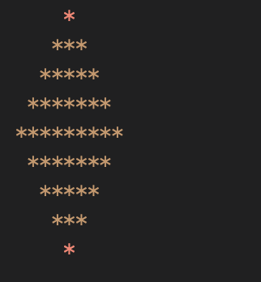

Find the maxmimun of 3 numbers without using if else or switch.
1<=numbers<=100000 , also all numbers may not be distinct
Note: if all numbers are same display all are equal
Sample Input :
5
6
7
Output:
7
Write a program that accepts 'n' integers from the user and prints the second highest number among them.
Input Format
1st line will take an integer input 'n' then 'n' integer numbers
Constraints
1<=numbers<=100000
Output Format
second biggest number
Sample Input 0
10
1
2
3
4
5
6
7
8
9
10
Sample Output 0
9
Sample Input 1
5
9
9
7
6
5
Sample Output 1
7
Sample Input 2
5
5
5
5
5
5
Sample Output 2
No second biggest number
Explanation 2
If all numbers are same like in this example then print No Second biggest number.
Take a number and return all the even digits of the number.
Constraints:
0 <= number <= 10000
Input:
A single integer is provided as input.
Output:
Return a list of even digits of the number, each digit in a new line.Return -1 in case there are no even digits
Example:
Input:
1204
Output:
2
0
4
Restriction: You cannot convert the number to string and solve it.
For number from 1 to 100 if number is divisible by 3 print 'Hello' if divisible by 5 print 'World', if divisible by 15 print 'HelloWorld' else print the number itself
Input:
No input is required
Output:
100 lines of output, each line containing the string HelloWorld or Hello or World or the number itself according to the above rules.
Restriction: You cannot use %(modulus) in this problem.
Take an integer input and print 'YES' if the integer is a mars number, else print 'NO'.
Hint:
A mars number is a number if the sum of its digits can be reduced to single digit in even number of steps.
Example:
199 => 19 => 10 => 1
Number of steps = 3
Hence the number is not a mars number.
Input:
A single integer input
Output:
Print 'YES' if the number is a mars number, else print 'NO'
Example:
Input:
199
Output:
NO
Restriction: Make sure to follow the steps as described in the problem.
*
Design this layout
Restrictions: Dont use any inbuilt string functions to solve it.
Title: Minimum Character Changes to Make a String Palindrome
Description:
Given a string s, determine the minimum number of character substitutions needed to convert the string into a palindrome. A palindrome is a string that reads the same forward and backward.
Input:
A single string s which consists of lowercase English letters.
Output:
Return an integer representing the minimum number of character changes required to make the string a palindrome.
Constraints:
-
Function Signature:
def min_changes_to_palindrome(s: str) -> int:
Input:
s = "radar"
Output:
0
Explanation:
The string "radar" is already a palindrome, so no changes are needed.
Input:
s = "abca"
Output:
1
Explanation:
Changing the last character 'a' to 'b' would make the string "abba", which is a palindrome. Hence, only one change is necessary.
Title: Software Version Comparison
Description:
Given two software version strings, v1 and v2, determine their relationship. The versions are compared based on the numerical value of their segments, which are separated by periods. You need to decide whether v1 is the same as, an upgrade from, or a downgrade to v2.
Note: Dont use split(), if needed code for it.
Input:
- v1 (string): A version number consisting of numerical segments separated by periods.
- v2 (string): Another version number with the same format as v1.
Output:
- Return a string indicating the relationship:
- "same" if both versions are the same.
- "upgraded" if v1 is an upgrade from v2.
- "downgraded" if v1 is a downgrade to v2.
Constraints:
- The version strings will consist of numbers and period separators only.
- Each segment of the version number can be considered to fit within a standard integer value.
Function Signature:
def compare_versions(v1: str, v2: str) -> str:
Input:
v1 = "12.34.56"
v2 = "12.34.57"
Output:
"downgraded"
Explanation:
Here, the third segment of v2 ("57") is higher than that of v1 ("56"), indicating that v1 is a downgrade relative to v2.
Input:
v1 = "12.34.56"
v2 = "12.000034.56"
Output:
"same"
Explanation:
Ignoring leading zeros, both version strings are equivalent as "12.34.56". Therefore, there is no upgrade or downgrade, and they are the same.
This problem involves parsing the version strings into comparable units, handling edge cases like leading zeros and different segment counts gracefully.
Given a string S find the length of the longest substring of S with all distinct characters.
Input Format
First line of input contains S
Output Format
Output a single integer, the length of the longest substring of S with all distinct characters.
Example 1
Input
aab
Output
2
Example 2
Input
icpcprog
Output
5
Explanation:
Example 1: Longest substring with all distinct characters is ab.
Constraints:
1 <= |S| <= 100000